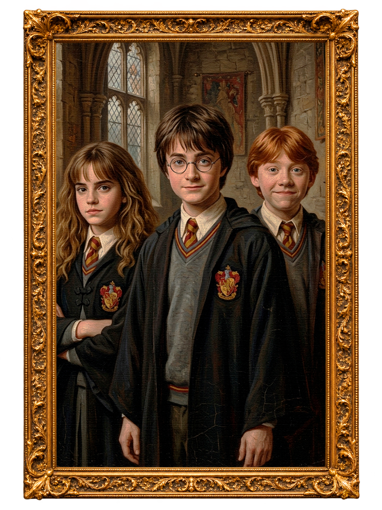

Um mundo onde tudo pode ser criado.
Harry Potter é uma saga de livros e filmes de ficção que acompanha Harry e seus amigos, jovens bruxos em Hogwarts, uma escola onde se aprende a lançar feitiços, preparar poções e enfrentar criaturas assustadoras. Por trás da magia, a história fala de coragem, amizade, medo, memória e decisões difíceis, temas que também estão dentro de cada um de nós.
A jornada atravessa fases importantes da vida de Potter, que cresceu sem imaginar que tinha um dos maiores poderes de todos os tempos: resistência extrema a magias obscuras. Que no nosso mundo poderia ser traduzido como a resiliência de não perder o controle de si.
